Back to ISU SHSSP 2023Torna a ISU SHSSP 2023
Stratospheric balloon missionMissione con pallone stratosferico
International Space University, Southern Hemisphere Space Studies Program 2023, Adelaide
International Space University, Southern Hemisphere Space Studies Program 2023, Adelaide
During the program, our group designed, built, tested, launched, tracked and recovered a stratospheric balloon in a single week. The flight was run as an analogue of an orbital mission: each participant took on a role that a real space mission would need.
Durante il programma il nostro gruppo ha progettato, costruito, testato, lanciato, tracciato e recuperato un pallone stratosferico in una sola settimana. Il volo è stato gestito come analogo di una missione orbitale: ogni partecipante ha ricoperto un ruolo che servirebbe in una vera missione spaziale.
- 35.4 kmmaximum altitudequota massima
- 2 h 21 minflight timedurata del volo
- 80.4 kmfrom launch to landingdal lancio all'atterraggio
- 5payloads, 1.2 kg in totalpayload, 1,2 kg in totale
The flightIl volo
The balloon was launched on 29 January 2023 from a field north of Adelaide and reached 35,431 m before bursting. Part of the burst balloon tangled around the parachute, so the descent was faster than planned. The payloads landed in a tree about 80 km to the east and were recovered by the ground teams. Telemetry was received by 37 stations, including three run by participants.
Il pallone è stato lanciato il 29 gennaio 2023 da un campo a nord di Adelaide e ha raggiunto 35.431 m prima di scoppiare. Parte del pallone esploso si è attorcigliata al paracadute, quindi la discesa è stata più veloce del previsto. I payload sono atterrati su un albero a circa 80 km verso est e sono stati recuperati dalle squadre a terra. La telemetria è stata ricevuta da 37 stazioni, tre delle quali gestite dai partecipanti.
PayloadsPayload
- Two cameras, one pointing down (nadir) and one at the horizon
- Two radiation detectors
- One life science experiment
- Due camere, una rivolta verso il basso (nadir) e una verso l'orizzonte
- Due rivelatori di radiazione
- Un esperimento di scienze della vita
Mission organisationOrganizzazione della missione
Twelve participants, supported by faculty advisors, were split into four teams:
Dodici partecipanti, seguiti dai docenti, erano divisi in quattro team:
- Planning and launch operations
- Ground station and tracking
- Payloads and data
- Data processing and analysis
- Pianificazione e operazioni di lancio
- Stazione di terra e tracciamento
- Payload e dati
- Elaborazione e analisi dei dati
Data were followed in real time during the flight and analysed again after the payloads were recovered.
I dati sono stati seguiti in tempo reale durante il volo e analizzati di nuovo dopo il recupero dei payload.
ResultsRisultati
- The Geiger counter showed the radiation peak (Pfotzer maximum) at about 20 km of altitude.
- The personal dosimeter flown as a backup recorded 3 µSv over the whole flight.
- The nadir camera saw only clouds, so the image processing exercise used imagery from an earlier flight (Horus 58) together with Sentinel-2 data, sharpening the resolution from 10 m to 1.5 m.
- Il contatore Geiger ha mostrato il picco di radiazione (massimo di Pfotzer) a circa 20 km di quota.
- Il dosimetro personale, portato in volo come riserva, ha registrato 3 µSv nell'intero volo.
- La camera nadir ha visto solo nuvole, quindi l'esercizio di elaborazione delle immagini ha usato quelle di un volo precedente (Horus 58) insieme ai dati Sentinel-2, portando la risoluzione da 10 m a 1,5 m.
From the onboard cameraDalla camera di bordo
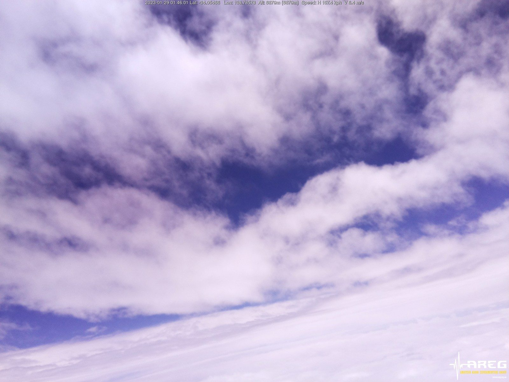
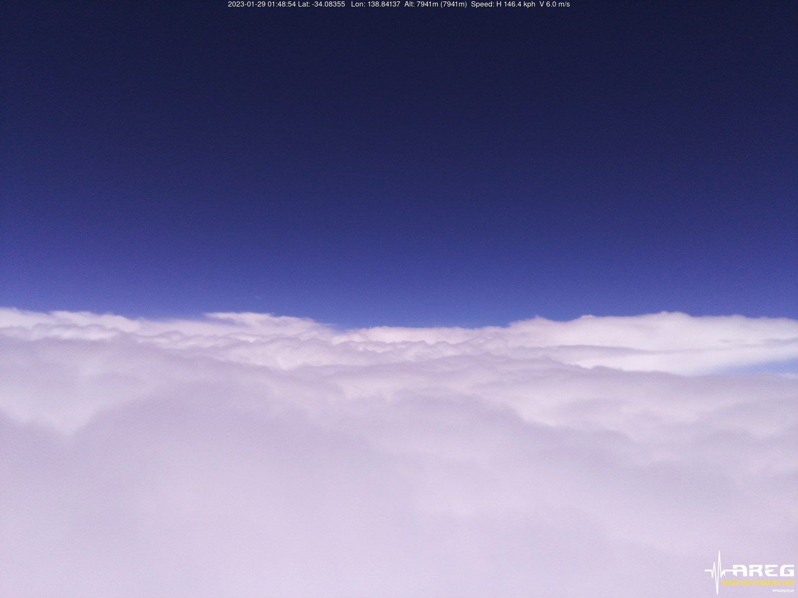
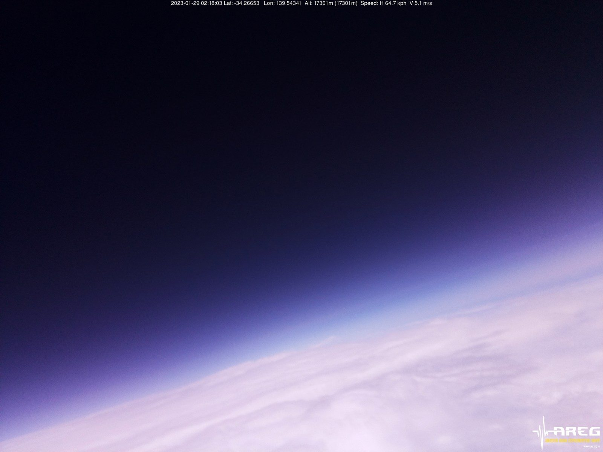
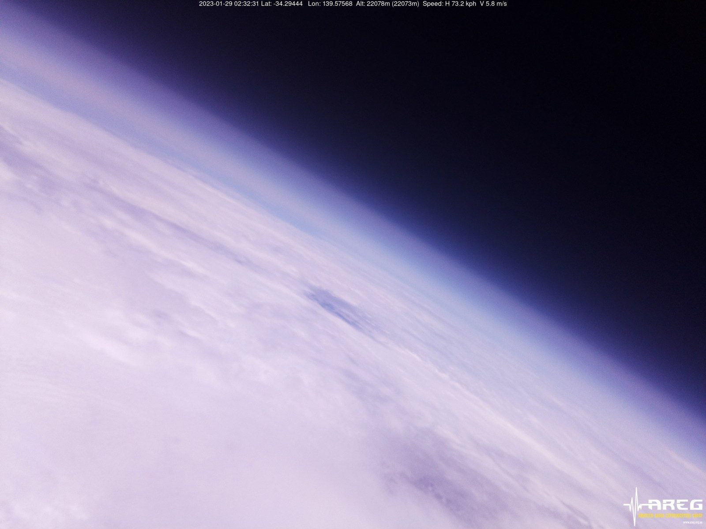
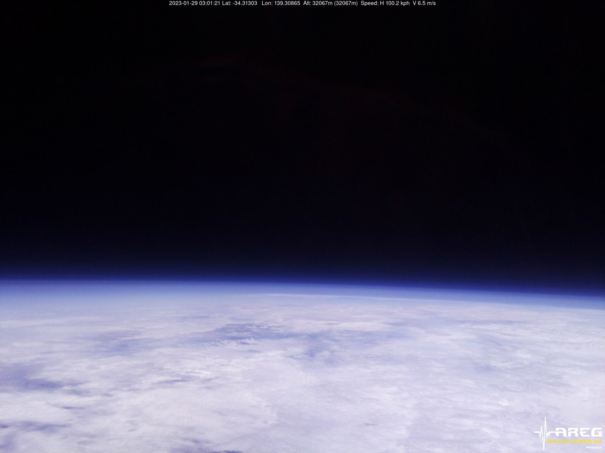
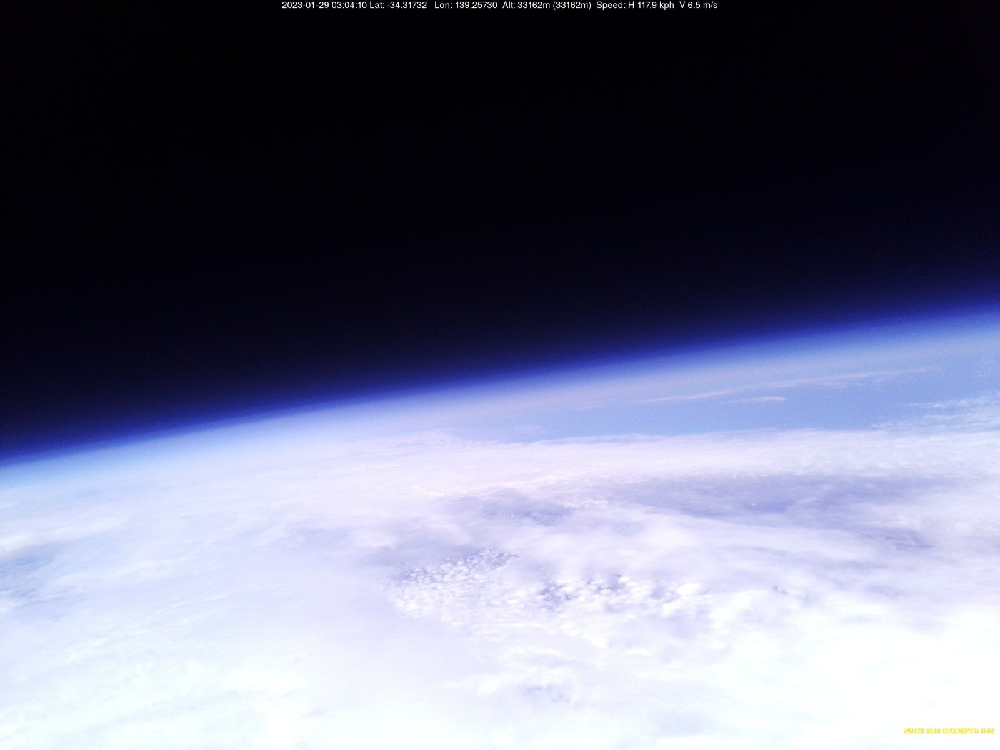
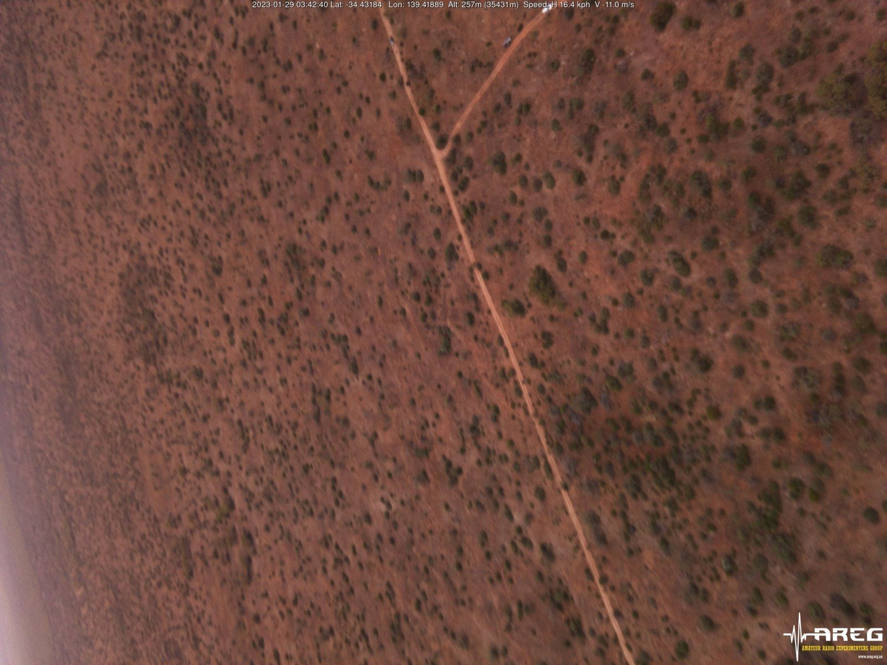
Onboard images: Immagini di bordo: Amateur Radio Experimenters Group (AREG), Project Horus
PhotosFoto
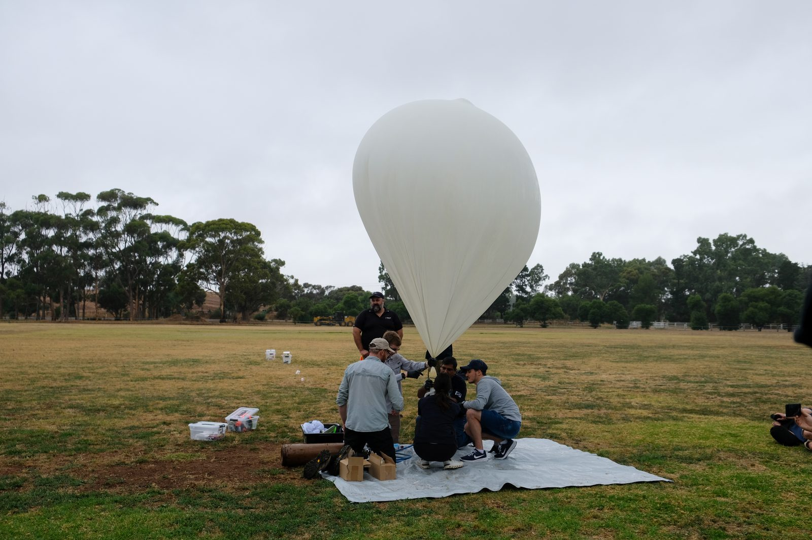
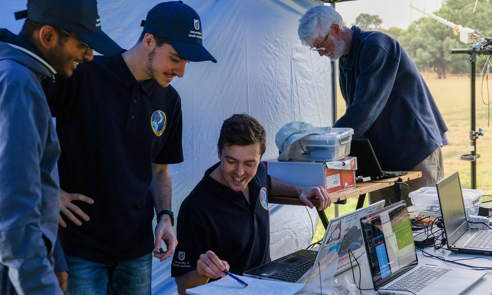
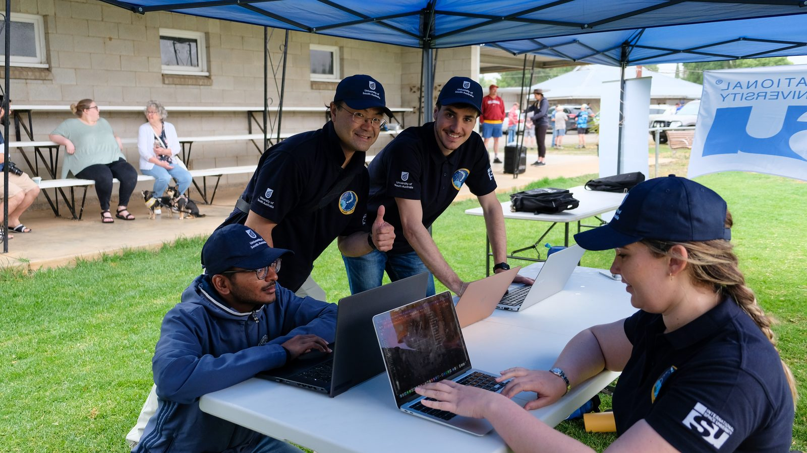
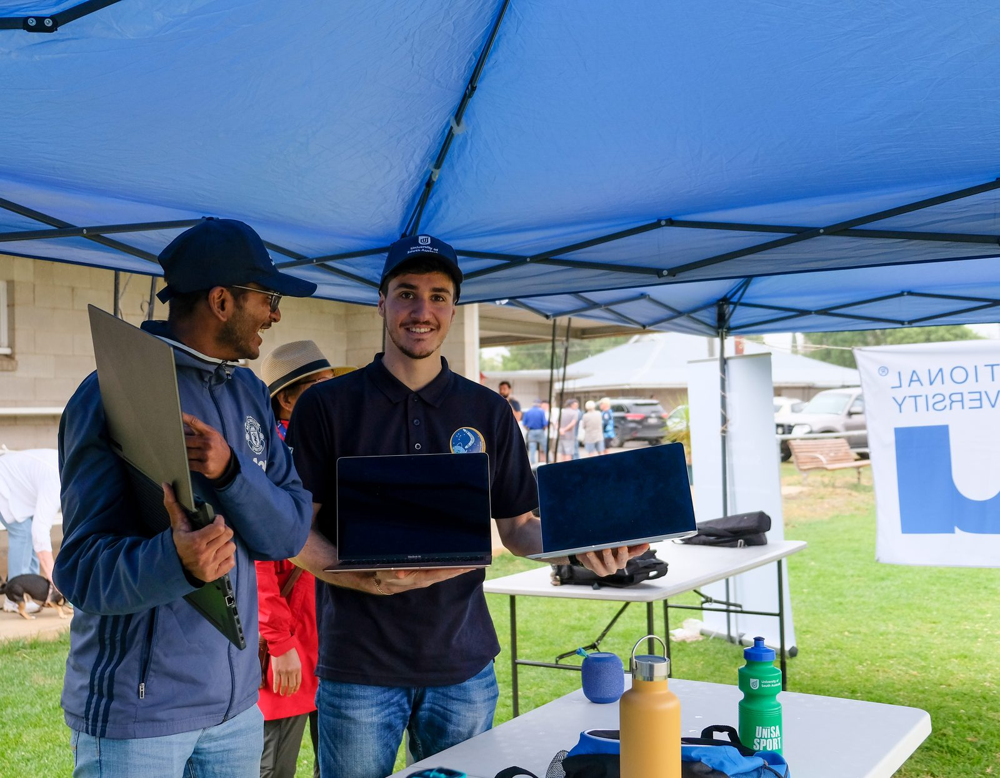
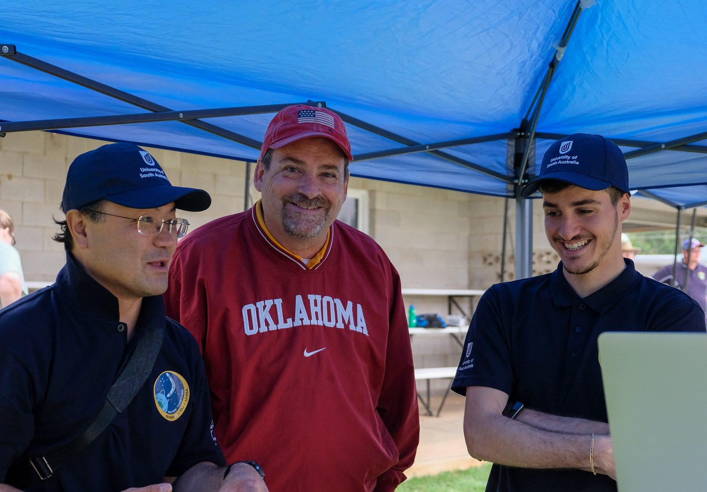
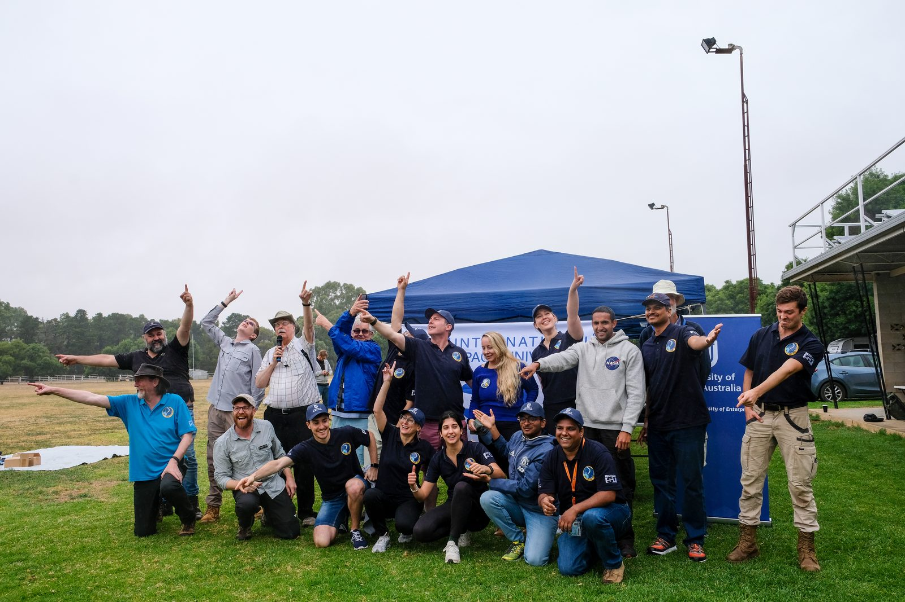
Flight report and dataReport e dati del volo
Flight report (AREG, Project Horus)Report del volo (AREG, Project Horus) Sensor data dashboard (SondeHub)Dashboard dei dati dei sensori (SondeHub)
PublicationPubblicazione
A Stratospheric Balloon Program as a Space Mission Analogue: An Educational Activity at the International Space University, 74th International Astronautical Congress (IAC), Baku, 2023.